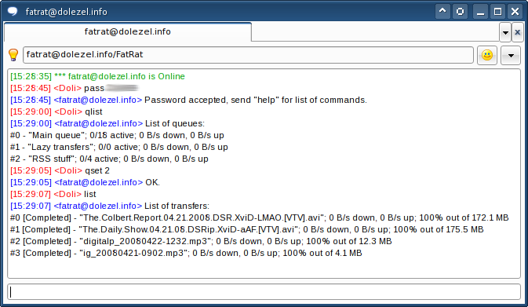

|
Using Jabber |
Open a chat session with FatRat in your favorite Jabber application. If you've configured FatRat to ask for password, enter it sending a message like:
pass secretpassword

By sending a help command, you can get a quick overview of available commands.
The qlist command lets you retrieve the list of existing queues along with some basic information. Notice the #n at the beginning of every line - this is the ID used to identify the queue - you can use this number to change the current queue - let's switch to the third queue:
qset 2
Unless there is no queue, the first queue is marked as active by default. Now, when we have the third queue selected, we can retrieve the list of existing transfers.
list
Now we can see another list of items marked with index numbers. These numbers are used for working with transfers.
pause - pause specified transfersresume - resume specified transfersdelete - delete specified transfers (but retain their data)Multiple transfers can be manipulated at once:
pause 0 2 5
If we want to resume or pause all transfers, we can use the pauseall and resumeall commands.
The add command is the most complex one. Say we want to download two files, let FatRat autodetect the transfer type, and store the files to the default directory:
add http://server/file1.zip http://server/file2.zip
Now we want to add a BitTorrent transfer, but the URL is awkward enough not to be detected as a .torrent URL correctly.
add TorrentDownload http://server/gettorrent.php?id=12345
Look at TorrentDownload - this is the internal class name. As of now, these are the available class names:
GeneralDownload - HTTP(S), FTP and SFTP downloadsTorrentDownload - BitTorrent downloadsFtpUpload - FTP and SFTP uploadsRapidshareUpload - RapidShare.com uploadsIf we want to download files to a non-default directory or upload files (in which case it is obligatory!) we specify the destination path like this:
add TorrentDownload /var/tmp http://server/gettorrent.php?id=12345
Alternatively, we may omit the transfer class:
add /var/tmp http://server/file.torrent
Now, when we're done playing with FatRat, we can log out:
exit
Copyright © 2006-2008 Luboš Doležel